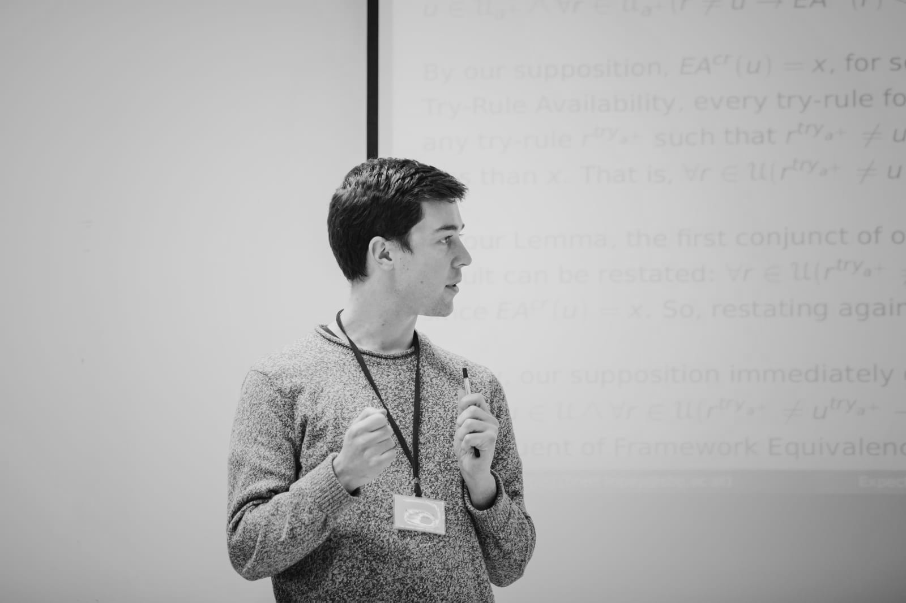

I completed my DPhil (PhD) at Merton College, University of Oxford, and will graduate in spring 2023. I mainly work on epistemology and formal epistemology, though I hold some other interests in ethics, decision theory and the philosophy of language.
 My doctoral work has been on the increasingly popular idea in epistemology that rational beliefs are those which are as accurate as possible. This has involved investigating a number of issues, including: are accurate beliefs guided by logic; how should new information change your mind if you want to be as accurate as possible; does new information make you more accurate; and, what should you do when you're not sure what being accurate amounts to in the first place. I'm also very interested in the role of knowledge in communication, the nature of evidence, and epistemological issues more generally.
You can email me at matthew [dot] hewson [at] philosophy [dot] ox [dot] ac [dot] uk. I tweet, very sparingly, here. My PhilPeople page is here.
Publications
Accurate Believers Are Deductively Cogent. Noûs. (online-first).
This paper argues that the standard accuracy frameworks for outright belief are flawed, and that remedying their faults gives rise to considerably more stringent epistemic norms than has been thought.
Indicative Conditionals and Epistemic Luminosity (with James Ravi Kirkpatrick). Mind. 2022.
We examine a recently discussed puzzle connecting indicative conditionals and the question of whether one always knows what one knows.
Accuracy Monism and Doxastic Dominance: Reply to Steinberger. Analysis. 2020. [Pre-print].
Given the standard dominance conditions used in accuracy theories for outright belief, epistemologists must invoke epistemic conservatism if they are to avoid licensing belief in both a proposition and its negation. Florian Steinberger (2019) charges the committed accuracy monist — the theorist who thinks that the only epistemic value is accuracy — with being unable to motivate this conservatism. I show that the accuracy monist can avoid Steinberger's charge by moving to a subtly different set of dominance conditions. Having done so, they no longer need to invoke conservatism. I briefly explore some ramifications of this shift.
Work in progress
Please email me if you'd like a copy of any of these.Accuracy epistemology and higher-order belief.
This paper examines accuracy-centred constraints on various kinds of higher-order belief, and shows that, if you're concerned to be accurate, you must think of your beliefs as a reasonable guide to the truth.
Accurate updating.
I look at some problems that arise for theories of updating given the constraints that a) the theory uses a philosophically sophisticated conception of evidence and b) adherents of the theory want updates to maximise expected accuracy.
The value of evidence.
Given philosophically sophisticated theories of evidence and standard accounts of accuracy, it turns out evidence can make you epistemically worse off in various ways — a troubling conclusion for those who think evidence is epistemically important. I show that, provided your prior opinions satisfy certain fairly intuitive constraints, evidence is always epistemically valuable after all.
Uncertainty about accuracy.
It's hard to be precise about what it means for a belief to be accurate. There are well known concerns that these difficulties in singling out what accuracy is cause problems for various parts of the accuracy epistemological research programme, including the much-fêted accuracy argument for probabilism. I show that if we treat uncertainty about the nature of accuracy as a species of normative uncertainty, and apply 'uncertaintist' rules appealed to in the case of moral uncertainty, the accuracy argument for probabilism can be recovered.